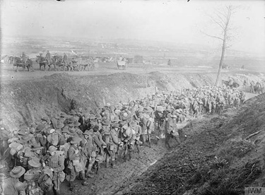
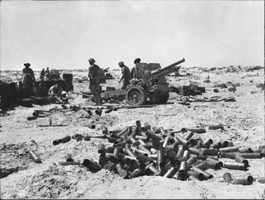
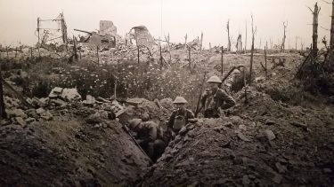

Battle of Delville Wood
The Battle of Delville Wood was a horrific battle early in the Somme campaign, with a casualty rate of 80%.

Battle of Agagia
The Battle of Agagia took place in Egypt, against Senussi rebels backed by the Ottoman Empire.

Retreat to Reninghelst
The South African Brigade was heavily shelled during withdrawal to Reninghelst, and Jackie attempted to build a wall.